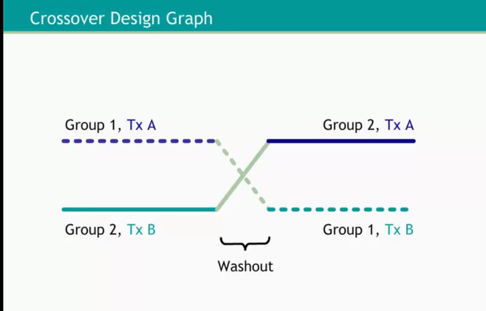

We want to administer 02 types of treatments to a group of persons successively. As opposed to parallel design, crossover study attempts to balance timing of exposure to each treatment. Thus, each patient serves as his/her own control. This methods aims to reduce variability among patients but also survey costs.
One major drawbacks of this method is carry-over effects of first-period treatment to second period which may add difficulties to its data analysis.